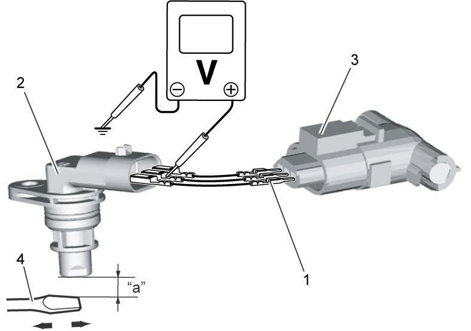

1C
| CMP Sensor Inspection |
1)Check CMP sensor power supply circuit, signal circuit and ground circuit according to Step 2 – 5 of DTC P0340:D16AA.
2)Set ignition “OFF”, and connect ECM connector to ECM.
3)Connect service wires (1) between CMP sensor (2) and CMP sensor connector (3).
4)Check CMP sensor signal voltage is as specified below both when iron (4) is brought in front of and away from CMP sensor.
If voltage is not as specified, replace CMP sensor.

If voltage is not as specified, replace CMP sensor.
NOTE:
Keep approximately 1 mm (0.03 in) gap “a” between magnetic substance (iron) and end face of CMP sensor.
CMP sensor signal voltage
When iron is brought in front of CMP sensor: 0 to 0.5 V
When iron is brought away from CMP sensor: Approx. 5.0 V

 "Expand image")